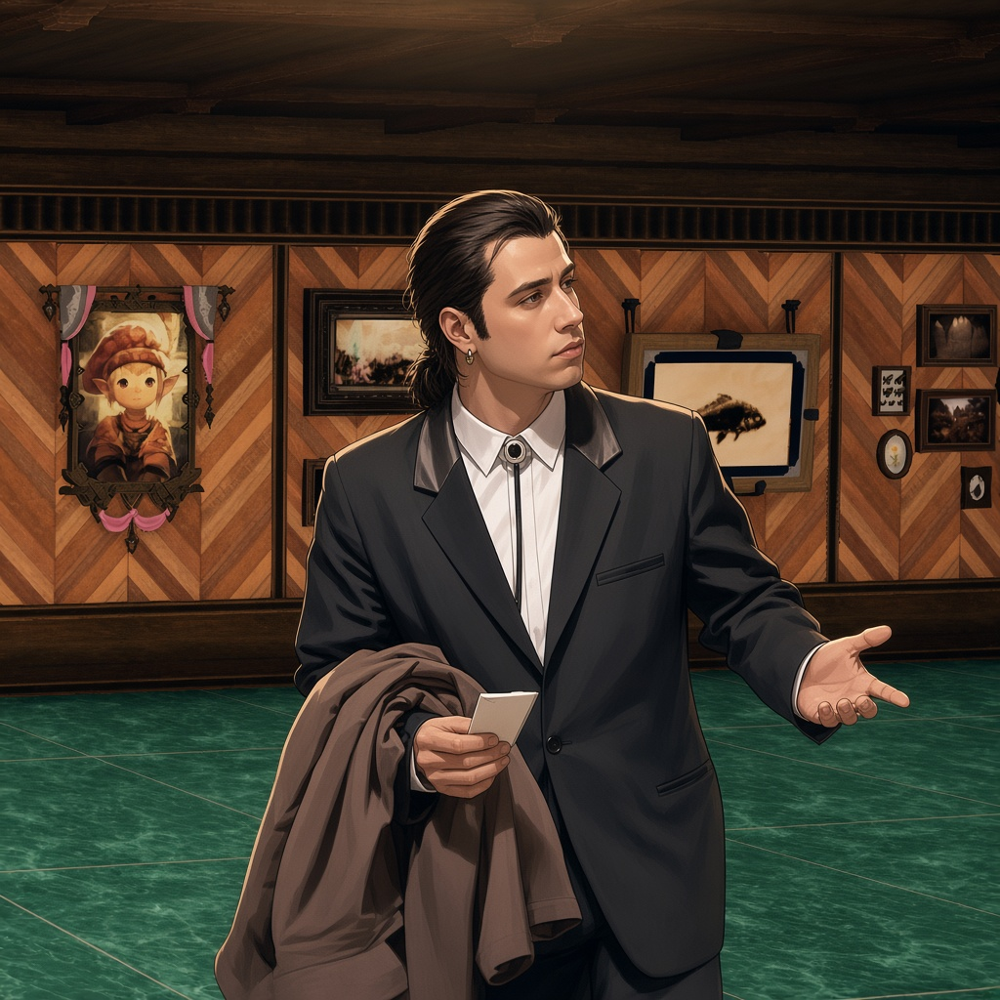

frames XIV
404
Cette page n'existe pas (ou plus). Retournez à l'accueil, ou signalez le lien cassé sur GitHub.
This page doesn't exist (anymore). Head back home, or report the broken link on GitHub.
Diese Seite existiert nicht (mehr). Zurück zur Startseite, oder melde den defekten Link auf GitHub.
このページは存在しません。ホームに戻るか、GitHubでリンク切れを報告してください。